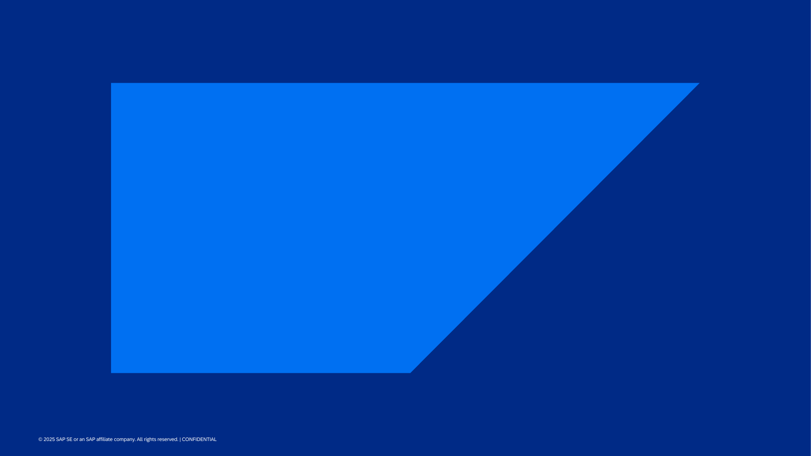
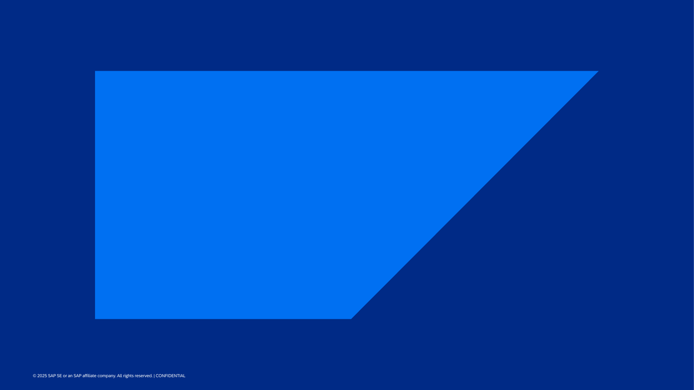

Everyone's talking about AI content generation. I decided to stop reading reviews and run my own test — using a real deliverable, with real stakes.
The Test
I took a recent article I wrote about agentic AI use cases for SAP and asked three different tools to turn it into a presentation. Same source material. Same goal. Three very different results.
The contenders:
- Claude (Anthropic's flagship model)
- ChatGPT (OpenAI, using GPT-4)
- Prezent (purpose-built AI for enterprise presentations)
My hypothesis going in: the specialized tool (Prezent) would win on format and polish, while the general-purpose LLMs would produce better raw content that I'd need to assemble manually.
I was wrong on both counts.
What I Found
🥇 Claude: The Strategic Thinker
Claude produced the most coherent output by a wide margin — and it wasn't even close. It understood the narrative arc of the source material: not just the facts, but why they mattered and how they connected.
The deck Claude generated had:
- A clear agenda that set up the problem before jumping to solutions
- The customer scenario (Meridian Manufacturing) woven throughout as a narrative thread
- Logical progression from pain → architecture → data products → outcomes
- Slides that read like they were written by someone who understood the material
The kicker? Zero manual deck work required. Claude generated complete, usable slides directly.
The real surprise: Claude was the only tool that pulled images from the source article and recast them into the presentation. It didn't just read the text — it understood the visual assets were part of the story and integrated them. Neither ChatGPT nor Prezent did this.
🥈 ChatGPT: The Template Maximalist
ChatGPT went in a completely different direction. It used every single slide in the template and produced a 30-slide deck. The output file was 14.3 MB — nearly 40x larger than Claude's version.
The problem? It filled slots rather than told a story. When you give ChatGPT a template, it apparently feels obligated to use all of it — whether the content calls for it or not. The result was bloated and repetitive, with content stretched thin to fill the available real estate.
Weakness: More slides ≠ better deck. ChatGPT optimized for template completion rather than narrative impact. A 30-slide deck that could have been 10 slides wastes everyone's time.
 

🥉 Prezent: The Enterprise Disappointment
This one surprised me most — and not in a good way.
Prezent positions itself as the enterprise AI for presentations. Their whole pitch is that they understand corporate communication, can apply your brand templates, and produce board-ready decks.
I couldn't figure out how to add my corporate template. The UI wasn't intuitive, and after 15 minutes of clicking around, I gave up and let it generate with its defaults.
The output was... fine. Accurate content, but formulaic. Heavy on numbered bullet lists. The Meridian Manufacturing story got chopped into fragments across slides instead of flowing as a narrative. It felt like a template got filled in, not a presentation got crafted.
Weakness: If your competitive advantage is "enterprise-ready," and an enterprise user can't access the enterprise features easily, that's a fundamental UX failure.
The Scorecard
| Criteria | Claude | ChatGPT | Prezent |
|---|---|---|---|
| Content accuracy | ✅ Excellent | ⚠️ Drifted off-brief | ✅ Accurate |
| Narrative coherence | ✅ Strong storytelling | ❌ Bloated, repetitive | ⚠️ Formulaic |
| Visual output | ✅ Pulled source images | ⚠️ Template bloat (30 slides) | ⚠️ Generic template |
| Ease of use | ✅ Simple prompting | ✅ Simple prompting | ❌ Confusing UX |
| Enterprise readiness | ✅ Direct output | ⚠️ Unpredictable | ❌ Features inaccessible |
| Manual work required | ✅ None | ⚠️ Fact-checking needed | ⚠️ Template setup |
🏆 The Winner: Claude
For strategic PMM content, Claude beat the specialized tool at its own game — while requiring zero manual assembly. That's the opposite of what I expected.
What This Means for PMMs
Four Takeaways from This Test
- General-purpose LLMs can beat specialized tools on their home turf. Claude understood positioning, narrative, and the "so what" better than the tool supposedly built for business presentations. That's a problem for specialized vendors — and an opportunity for PMMs who learn to prompt well.
- Visual generation can be a trap. ChatGPT's instinct to make things pretty led it off-brief. Don't confuse polish for quality. A deck full of AI-generated graphics that's off-message is worse than a plain deck that's on-point.
- "Enterprise" is often a positioning claim, not a product feature. Prezent's inability to easily onboard corporate templates — their core differentiator — is a UX failure. When evaluating tools, actually test the enterprise features. Don't trust the marketing.
- The best tool is the one that understands your content. Not the one with the fanciest features. Claude won because it got the material. It understood that a customer story should thread through the deck, not get chopped into fragments.
The Bottom Line
If you're evaluating AI content generation tools for PMM work, don't start with vendor comparison matrices. Start with your actual deliverables.
- For strategic content (messaging, positioning, narratives): Claude wins
- For quick visual drafts when accuracy is less critical: ChatGPT can work
- For enterprise presentations: Test the template workflow yourself before committing
The real insight: Claude won on every dimension — strategy, narrative, visuals, and zero manual work. The specialized tool couldn't match a general-purpose LLM on its own home turf. That should worry every vertical AI startup.
The AI doesn't need to do everything. It needs to do the hard part — the thinking — well. As it turns out, Claude does the easy parts well too.
What's your experience with AI content tools? I'd love to hear what's working (or not) for your team.